�V.広告
�@1960年代の広告
・1964年
・1965年
まだまだヘッドフォンはSR-1の時代である。アダプターはSRD-3の時代だ。アナログ関連も古い時代のものだが、汎用性を備えた近代的なUA-3の発売が予告されている。
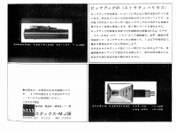 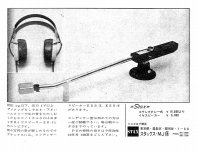 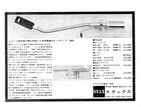 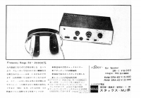
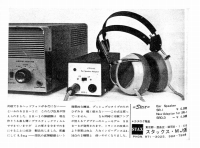 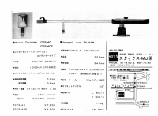 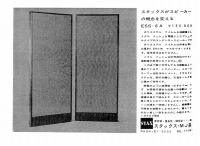
・1966年
引き続きヘッドフォンはSR-1、アダプターはSRD-3の時代だ。アナログ関連ではUA-3の発売された。
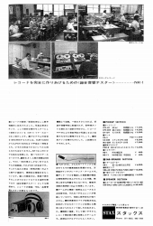 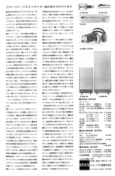 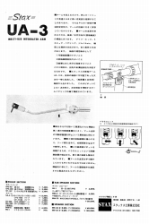 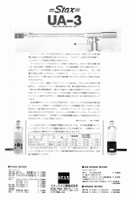 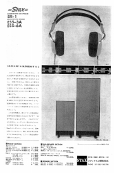
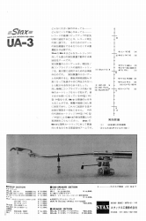 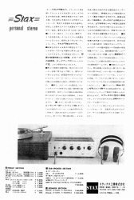 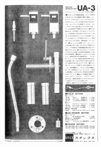 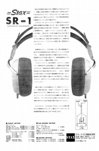
・1967年
アダプターはオークションなどで結構見かけるSRD-5となった。ラウドスピーカーは中型のESS-4Aが加わった。この年の広告はあまり見かけない。
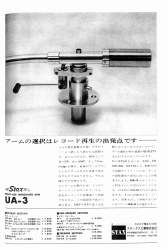 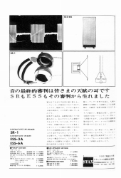 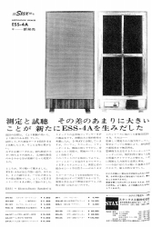 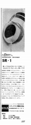
・1968年
ヘッドフォンはSR-1の後継機SR-3が登場。アナログ関連ではUA-3の改良型UA-3Ｎが発売された。前年と比べ多種の広告があった年だ。
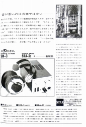 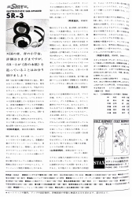 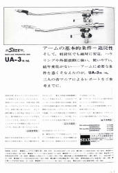 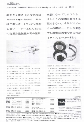 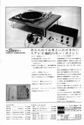
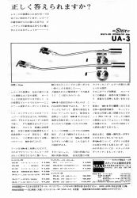 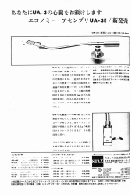 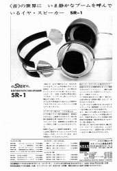 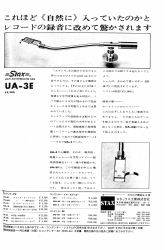 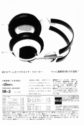
・1969年
新製品がなかった年。そのわりには結構多種の広告があった年だ。
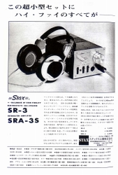 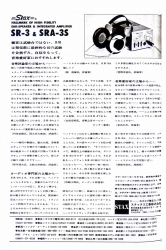 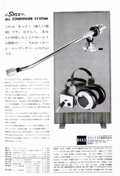 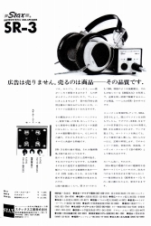 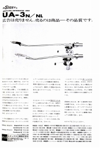